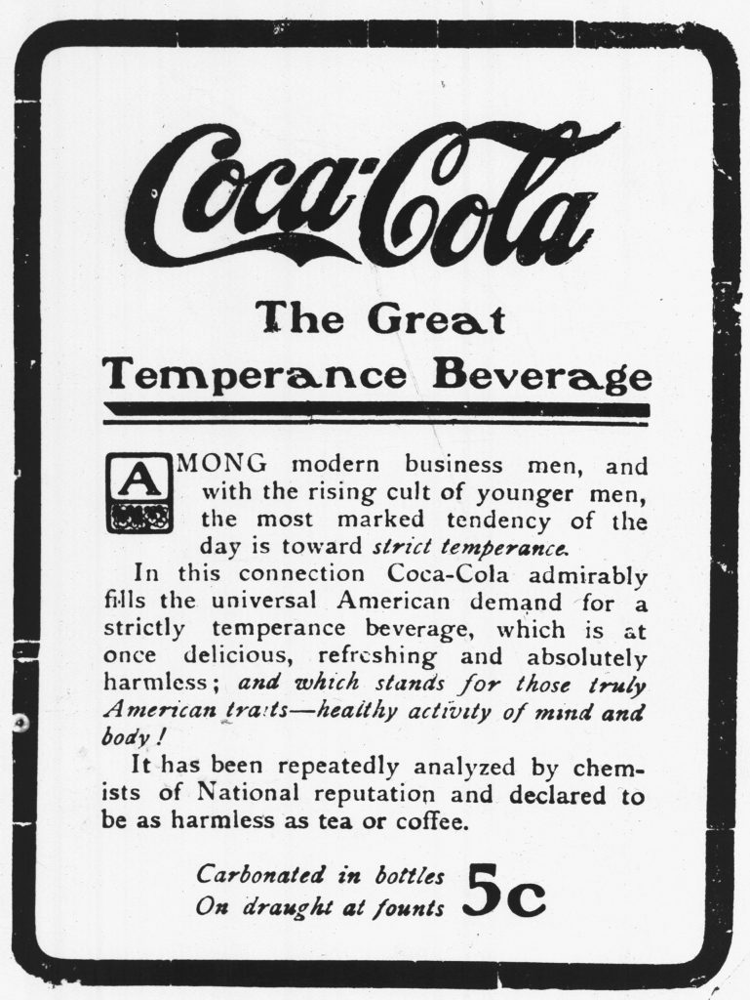

Throughout history, Coca Cola has relied on smart advertising to establish its brand as America's #1 refreshment, reflective of all the attributes of American idealism: hope, freedom, happiness, acceptance, and unity. It has been a huge part of global "Americanism," with its influence reaching into every country in the world (now with the exception of North Korea and Cuba, although this was not always the case). Here you will find an overview of Coca Cola's history and global dominance presented through a series of images that help communicate just how extensive and ubiquitous Coca Cola has become as a brand and symbol of American identity.
Go to essay: The Merciless Mirror of Coca Cola"Delicious and Refreshing" 1904
Coca Cola has frequently echoed the Statue of Liberty inscription welcoming all to the Land of the Free: A 1968 ad read: "Give me your hot, your thristy, your weary. . . Things go better with Coke"

"The Great National Temperance Beverage " 1906
"The Pause that Refreshes" Christmas campaign 1929
The first Coca Cola delivery truck in 1909
Fun Fact: The aluminum pull-top cans were invented to ship the drink to soldiers, but due to limited materials during wartime, the cans weren't actually used until 1960.
Coca Cola was supplied to soldiers in WWII.
Japanese troops invade Shanghai in 1937
Fun Fact: The famous "A Charlie Brown Christmas" 1965 was sponsored by Coca Cola.
"I'd Like to Buy the World a Coke" 1971
Coca Cola has consistently put out heartwarming messages of equality and unity through its wildly successful campaigns, with its ingenius values-based marketing ploys forever changing the face of commercial advertising.
"Have a Coke and Smile" 1979
The product itself is nothing more than syrup and soda water, yet its image is so much more. Consumers support Coca Cola not only for the product, but for the brand and what it represents: freedom, inclusivity, the American Dream.
"Can't Beat the Feeling" 1989
Coca Cola Around the World:

{kind=link}
{kind=link}
{kind=link}
{kind=link}
{kind=link}
{kind=link}
{kind=link}
{kind=link}
{kind=link}
{kind=link}
{kind=link}

"Taste the Feeling" campaign 2016
The "Love is Love" campaign, which ran in Hungary in 2019, faced heavy criticism from conservatives across the country.
The "A Coke is a Coke" 2019 Superbowl commercial featured the familiar tune from the 1971 "I'd Like to Buy the World a Coke," and featured similar themes of diversity and acceptance.
Yet, many of the promises Coca Cola sells to its international subscribers are empty, shadows of an American ideal that can never be fully attained.
In another vein, Coca Cola has also become a means of introducing economic liberalism in different parts of the world (see Coca Cola's entry into China). The drink itself embodies many characteristics of American capitalism –– the company switched to high fructose corn syrup instead of sugar in 1984 to maximize profit margins, a change that has aided in the preservation of America's status as largest corn producer in the world, as well as it's obesity rate of over 40% as of 2020.
Find out what Coca Cola has been doing in response to COVID-19
Coca Cola may have done some good in spreading a few much-needed messages and using its influence to help others, but with that has come harmful consequences. Perhaps in the future, quality and health will become a top virtue in consumer products, but until then. . .